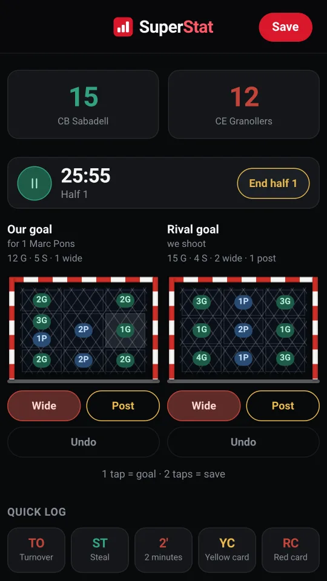
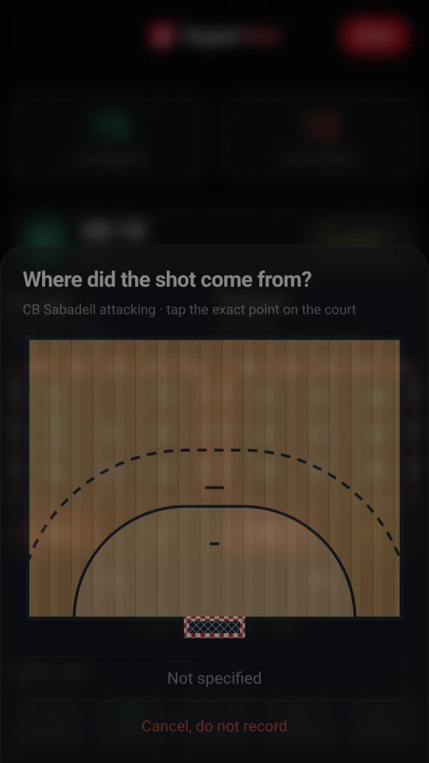
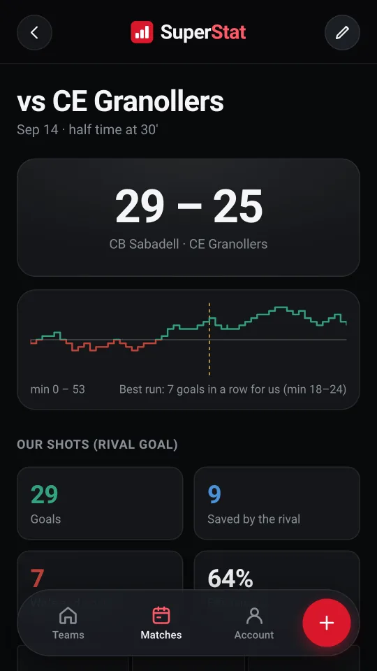
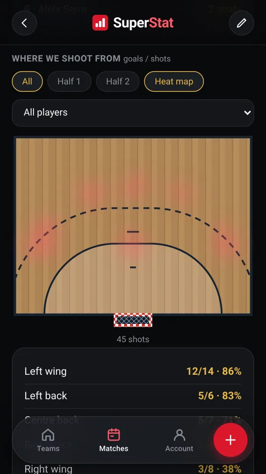
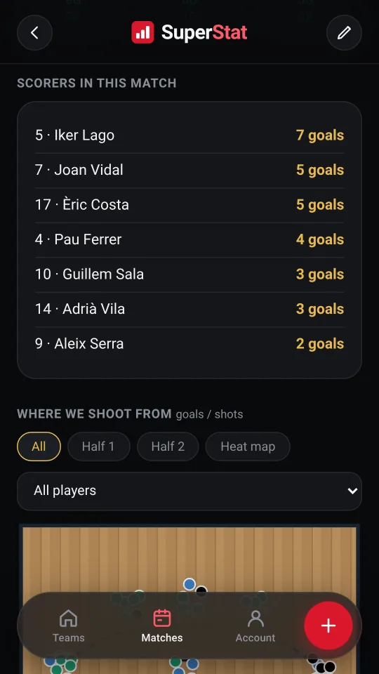
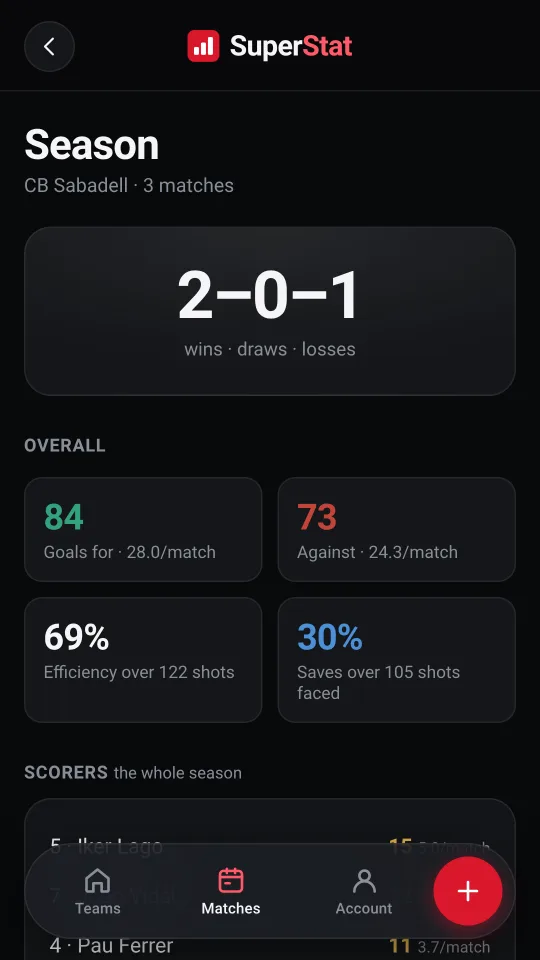
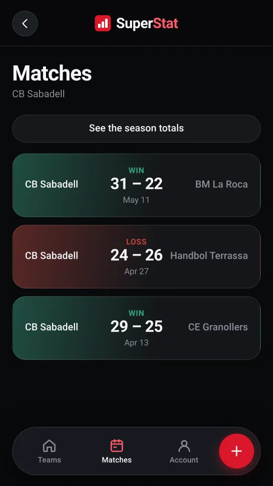
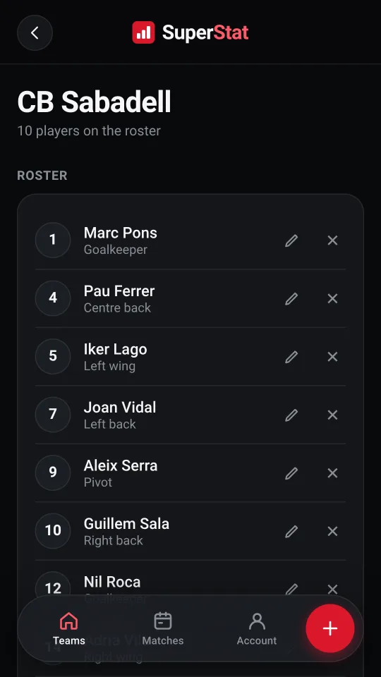

Both goals
Yours and the opponent's, split into nine zones. One tap on a zone is a goal, two taps are a save, and there are separate buttons for wide and post.
Log the match as it is played, with your phone in your hand, and the report is done by the final whistle.

Everything happening on court fits on one screen, so you do not lose sight of the game while you log it.
Yours and the opponent's, split into nine zones. One tap on a zone is a goal, two taps are a save, and there are separate buttons for wide and post.
Mark with one finger the exact spot the shot came from, on a half court drawn to scale. If you would rather go faster, switch it off.
With pause, and a button so you decide when the first half ends. Every entry keeps its own minute and half, with no assumption that halves last thirty minutes.
Asked once and then kept, so goals conceded have an owner too and the save percentage actually means something.
Quick entry for turnovers, steals, two minutes and cards, with the same couple of taps.
Every substitution is logged, and that is where each player's plus/minus comes from: what the score does while they are playing.
In case your finger slips. The last entry comes off, and that is it.
The report comes out of what you logged. There is nothing to write up afterwards.
With the goals spread across the areas of the goal.
The shape of the match, with the best run marked.
Who scored, who saved, and what the score was doing with each player on court.
Over the court, filtered by player and by half, plus a heat map.
The shooting zone crossed with the area of the goal: the number that actually helps you prepare a goalkeeper.
The match to CSV, or shared as an image from the phone itself.
The eight screens you will use most, from a real match logged with the app.







Every match you save adds up. The team gets its own running totals, without opening a year of matches one by one.
Several teams, each with its own squad, and the same data on your phone and on your computer.
Start free and stay free. The paid plan does not unlock stats: you have them all from the first match. All it lifts are the two caps.
€0 forever
No card, no expiry date.
€3.49 per month
Taxes not included. Cancel any time.
| What you get | Free | Pro |
|---|---|---|
| Teams | 1 | Unlimited |
| Saved matches | 5 | Unlimited |
| Live logging: shots, events and clock | ||
| The shot spot on the court | ||
| Shot map and heat map | ||
| Season stats | ||
| Plus/minus per player | ||
| Export to CSV and share | ||
| Works with no signal | ||
| Sync across your devices | ||
| Four languages | ||
| No ads, no tracking | ||
| Keeps the project going | — |
Payment is handled by Stripe. SuperStat does not store your card details.
So the app does not need one. It opens and you log the match all the same, and anything pending uploads by itself when the network comes back.
If your phone drops the app mid-match, it offers to pick up where you left off.
One account, with Google or with email and password, and the same data on your phone and on your computer.
No ads, no analytics and no tracking: each account can only see its own. You can export any match, or delete whatever you want whenever you want.
It opens in the browser, there is nothing to install, and it is free.